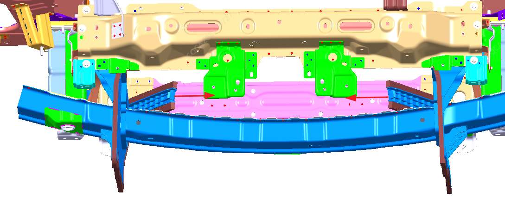
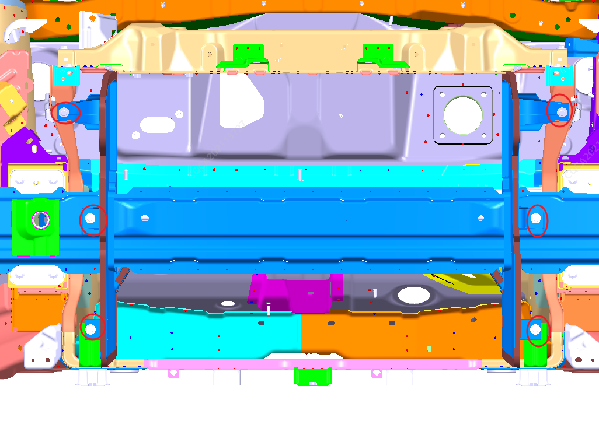

1. Демонтировать узел переднего бампера, см. Снятие и установка переднего бампера
2. С помощью плоской отвертки демонтировать откидную панель дефлектора и отогнуть ее в направлении стрелки;

3. С помощью торцевой головки № 10 выкрутить точки крепления дефлектора — 6 крепежных болтов M6

4. Установка выполняется в порядке, обратном снятию